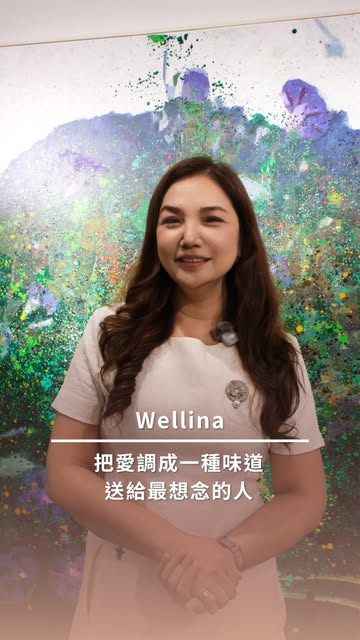
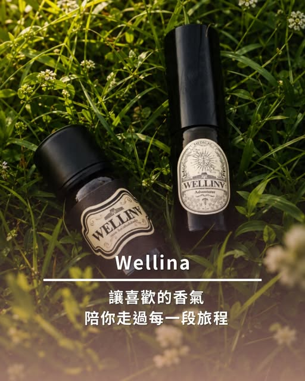
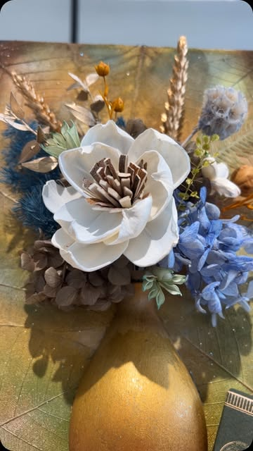
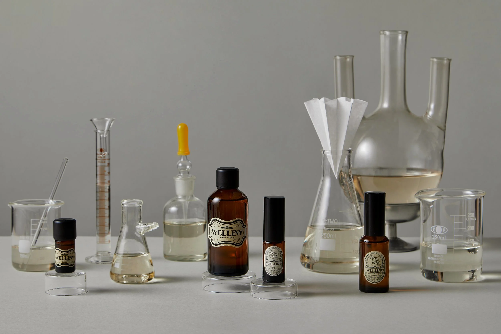
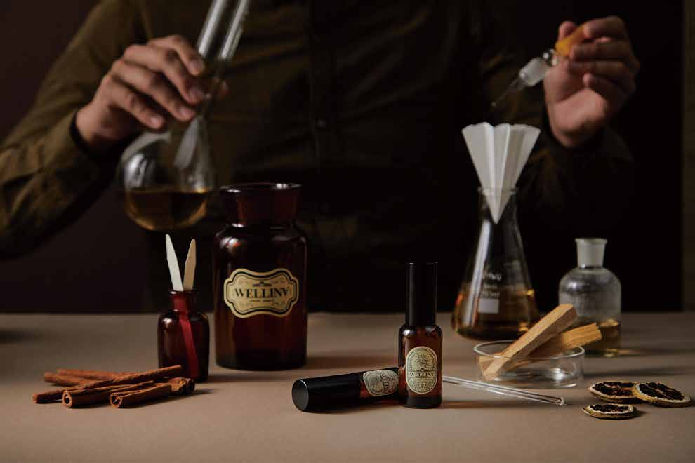

教育設計
依對象與場域，整理清楚的學習路徑。
WELLINA · FROM THE HEART
黃敏菁博士 Dr. Ivy 將課程、調香、教學現場與品牌合作，整理成一個有溫度、也能持續延伸的芳香教育平台。
AROMATIC EDUCATION · SCENT DESIGN · COMMUNITY
由心出發，
把關懷放進每一次學習。
START YOUR JOURNEY
把不同來訪需求放在首頁第一層，讓學員、合作夥伴與正在搜尋講師的人，都能很快找到下一步。

觀看品牌短片 ↗ABOUT DR. IVY
黃敏菁博士 Dr. Ivy
WELLINA 品牌主理人與芳香教育工作者，從教育設計、課程帶領到調香實作，持續累積能被理解、被應用，也能被分享的學習內容。
依對象與場域，整理清楚的學習路徑。
從原料、配方到安全使用，重視可操作性。
讓講師與專業學員的能力被持續看見。
完整學歷、任職與國際認證資料將在逐項核對來源後，更新於人物專頁。
THE WELLINA WAY
WELLINA 以「由心出發、傳遞關懷」為品牌精神。
網站把調香、精油知識、課程活動、品牌日常與學員經驗整理在一起，讓一次活動不只停在現場，而能成為下一次學習的起點。


SCENT · MEMORY · CARE
COURSES & LEARNING
首頁先呈現學習層次；正式課名、梯次、國際認證名稱與發證關係，會在資料完成查證後再公開。

WELLINA LEARNING TABLEFILM & MOMENTS
用活動影片、課程照片與品牌短片，讓第一次來訪的人快速理解 WELLINA 的教學氣氛與合作樣貌。
KNOWLEDGE AFTER CLASS
課前簡報、延伸閱讀、配方筆記、研究導讀與常見問答，會依主題互相連結，讓學員、人類搜尋與 AI 都能理解內容關係。
PEOPLE & COMMUNITY
未來會收錄 WELLINA 講師團隊、具跨域專業背景的校友，以及學員投稿內容；人物資料會先取得同意，再進入公開頁面。
WORK WITH DR. IVY
提供企業員工活動、ESG 關懷主題、品牌香氣訂製與跨域專案的合作入口；實際內容會依需求、對象與場域共同規劃。
INTERNATIONAL LEARNING
國際學院、認證單位、證書關係與官方連結會集中呈現。所有名稱、資格與對接方式，會在完成來源核對後正式公開。

SHOP & ONLINE LEARNING